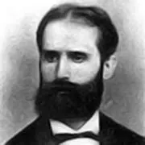
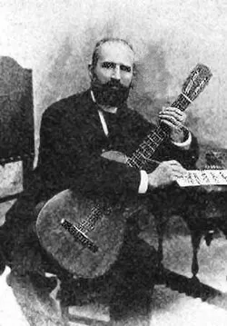

Un testimonio de fe y educación

El Beato José Ferrer Esteve nació el 17 de febrero de 1904 en la ciudad de Algemesí, provincia de Valencia, España. Desde temprana edad creció en un ambiente de profunda piedad cristiana que fomentó su fe, encaminándolo muy pronto hacia la vida religiosa y la vocación de educar.

Ingresó a la Orden de las Escuelas Pías siendo aún niño, comenzando su formación en la Masía del Pilar de Godelleta. En 1917 realizó el postulantado y luego el noviciado en Albarracín. Tras cursar la carrera eclesiástica y recibir la ordenación sacerdotal, desarrolló con gran devoción su ministerio docente. Ejerció su labor educativa y pastoral acompañando a los jóvenes en los colegios de Albacete, su natal Algemesí y Utiel.
Durante la época de persecución religiosa en la Guerra Civil Española, el Padre José Ferrer Esteve se mantuvo firme en su vocación y nunca ocultó su condición de sacerdote escolapio. Fue apresado y finalmente sufrió el martirio, siendo asesinado por su fe el 9 de diciembre de 1936 en la localidad de Llombai. La Iglesia reconoció su entrega heroica y fue beatificado solemnemente el 1 de octubre de 1995.
¿Cuánto aprendiste sobre el Beato José Ferrer Esteve? Resuelve este pequeño desafío.
Próximamente espacio interactivo
Proyecto: Rostros de la Santidad Escolapia
Equipo: Estudiantes de la Institución
Materias: Informática y Catequesis
Toda la información ha sido obtenida de fuentes confiables.